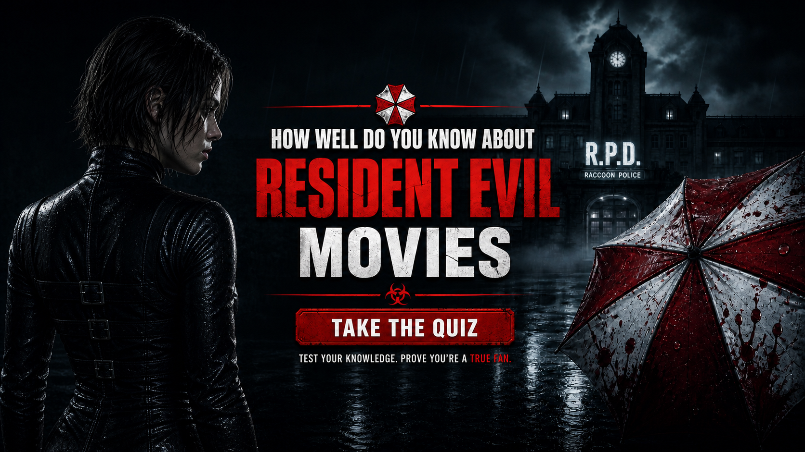

Think you know Alice, Umbrella corp., the T-virus and the creatures that came from it? Test your knowledge and see how much of the Resident Evil film series you really remember.


About The Resident Evil Movie Quiz
The Resident Evil Movie Quiz is a 25-question trivia challenge for fans of the live-action Resident Evil film series. It tests how well you remember Alice, Umbrella Corporation, the T-virus, creatures, facilities, characters and major events from the movies.
The questions include both major story developments and smaller details that can be easy to forget. You may be asked about characters and their identities, Umbrella facilities, experiments, artificial intelligence, creatures, important locations and events that changed the course of the story.
Each question has four possible answers, with one correct choice. Every correct answer earns 2 points, giving the quiz a maximum score of 50. Your final result is displayed as a score out of 50 along with your Resident Evil Knowledge level.
The quiz focuses on the live-action movie continuity rather than the video games. Although the movies are inspired by the Resident Evil games, they contain their own characters, storylines and interpretations of the Resident Evil universe.
How The Resident Evil Movie Quiz Works
The quiz contains 25 multiple-choice questions, and each question presents four possible choices. Read the complete question and all available answers before selecting the option you believe is correct.
The questions cover different aspects of the movie series. Some focus on Alice and other major characters, while others test your memory of Umbrella Corporation, the T-virus, the Red Queen, the Hive, Nemesis, laboratories, survivors and major events.
Every correct answer is worth 2 points. With 25 questions, the maximum possible score is 50. Your final score is then used to determine your Resident Evil Knowledge level.
You do not need to remember only the biggest action sequences to score well. Some questions can involve specific details from the movies, so remembering characters, locations, organizations and the connections between different events can make a difference.
The quiz is designed for entertainment and fan trivia. It is not an official quiz produced by the filmmakers, production companies or rights holders of the Resident Evil franchise.
Quiz Navigation
Starting the quiz
Select START QUIZ on the opening screen to begin. The first Resident Evil question will then appear with four possible answers.
Choosing an answer
Read the question carefully and compare all four choices before making your selection. Questions may involve characters, organizations, creatures, locations or events from different movies.
Moving between questions
Use the Next button to continue through the quiz. The Back button allows you to return to an earlier question and reconsider your answer before continuing.
Completing the quiz
Continue until all 25 questions have been answered. After completing the quiz, your final score and Resident Evil Knowledge level will be displayed.
Try Again
Select TRY AGAIN after receiving your result if you want another attempt. A second attempt can help you improve your score and see whether you remember questions that challenged you previously.
Challenge Your Friends
After completing the quiz, use CHALLENGE YOUR FRIENDS to share the challenge and see whether another Resident Evil fan can score higher.
Resident Evil Movie Quiz FAQ
How many questions are in the quiz?
The quiz contains 25 multiple-choice questions, with four possible answers for each question.
What is the maximum score?
Each correct answer is worth 2 points, giving the quiz a maximum possible score of 50.
Which Resident Evil movies does the quiz cover?
The quiz focuses on the live-action Resident Evil movie series and its recurring characters, organizations, creatures, locations and story events.
Is the quiz based on the video games?
The main focus is the live-action movie continuity. While the movies were inspired by the Resident Evil games, the two versions have important differences in characters, storylines and events.
Who is Alice?
Alice is the central protagonist of the live-action Resident Evil movie series, portrayed by Milla Jovovich. Her story connects many of the major events and conflicts explored throughout the films.
What is Umbrella Corporation?
Umbrella Corporation is one of the most important organizations in the movie series. Its research, biotechnology and experiments are closely connected to the outbreak and many of the events encountered by Alice and the other survivors.
What is the T-virus?
The T-virus is a fictional biological agent in the Resident Evil universe. Its effects and the creatures associated with it are part of the franchise's fictional science-fiction and horror setting.
Does the quiz include creatures?
Yes. Questions can cover creatures and infected enemies that appear throughout the movies, as well as the characters and events connected to them.
Can I take the quiz again?
Yes. Select TRY AGAIN after receiving your result to restart the quiz and attempt a higher score.
Can I challenge my friends?
Yes. Use the CHALLENGE YOUR FRIENDS button after completing the quiz to share the challenge and compare your results with other Resident Evil fans.
Spoiler Warning
This quiz contains spoilers for the Resident Evil movies, including characters, identities, organizations, creatures, locations, experiments and major story events.
If you have not watched the movies and want to experience their story without knowing important details in advance, consider watching them before taking the quiz.